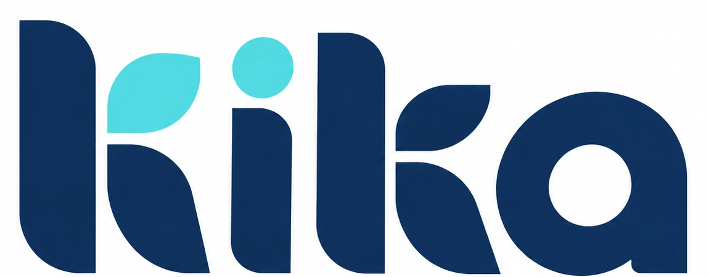
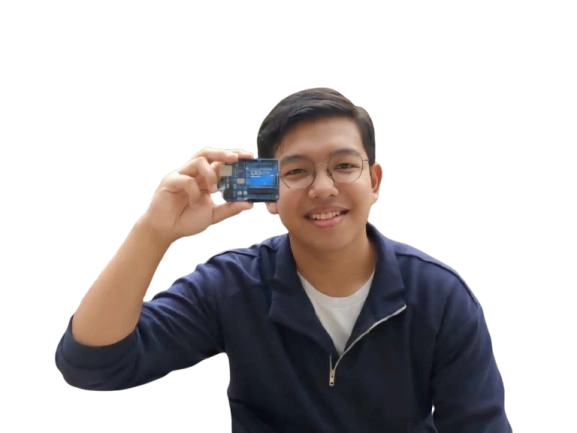
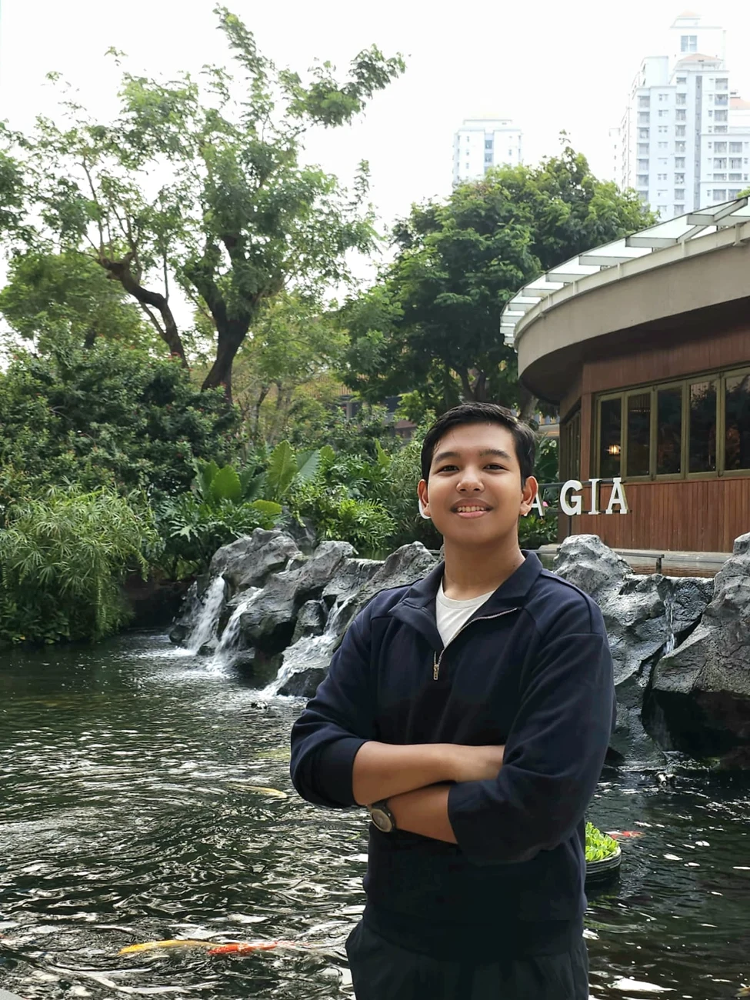
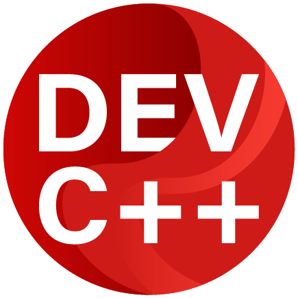
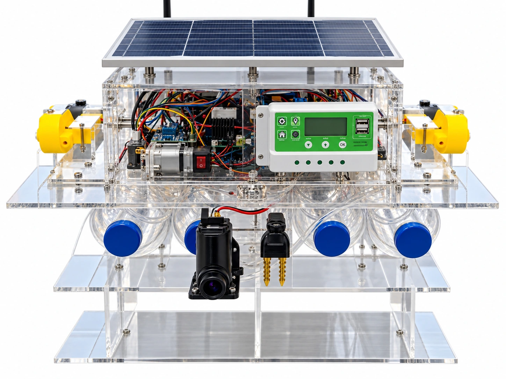
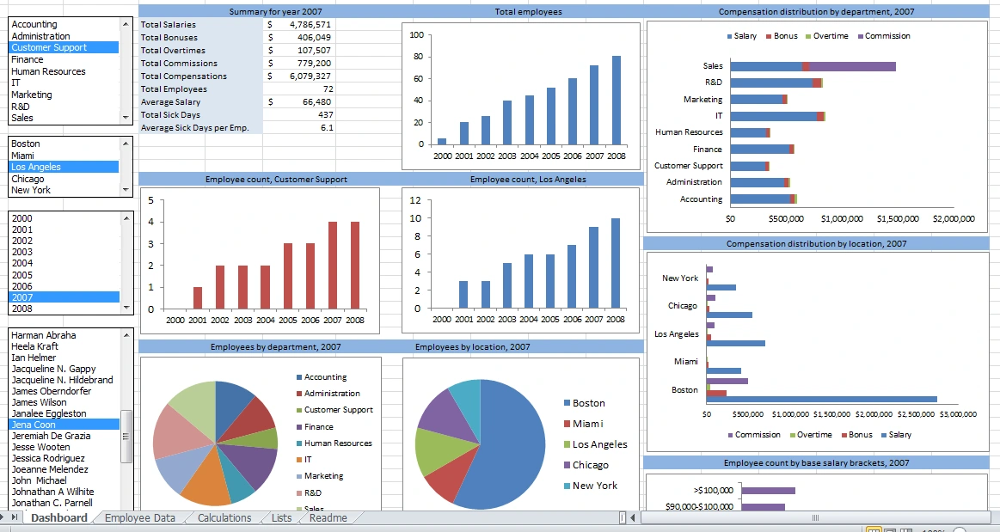
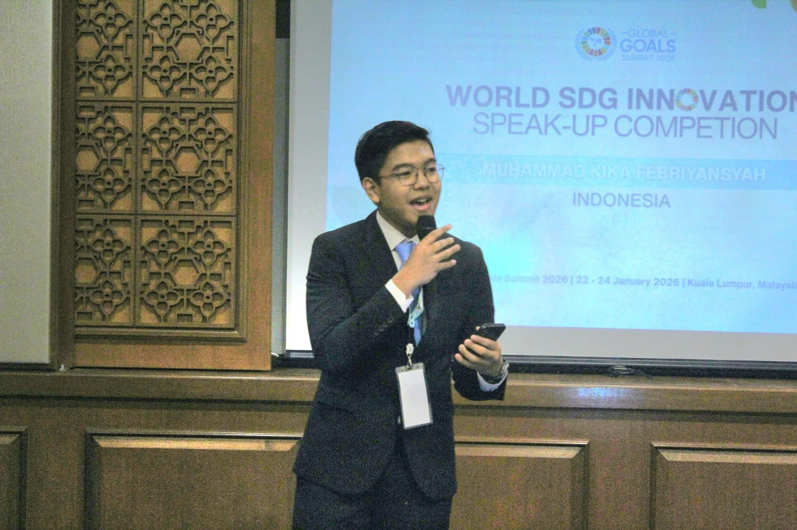
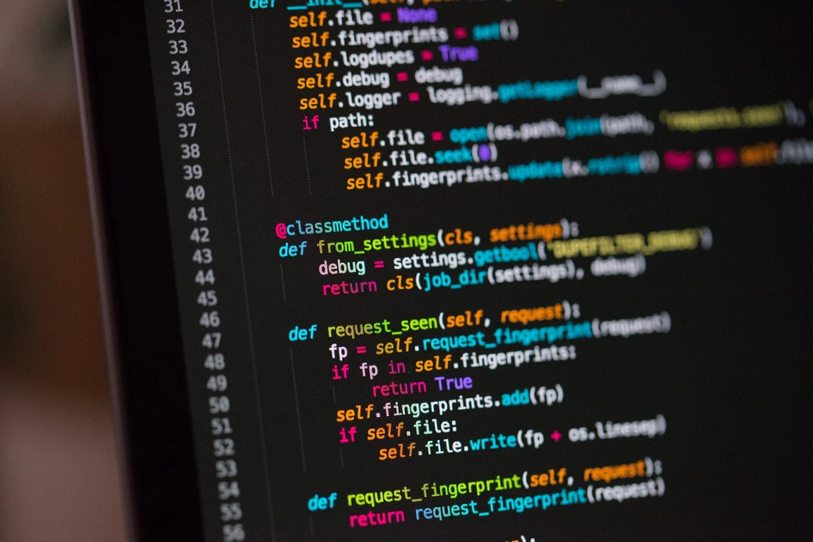
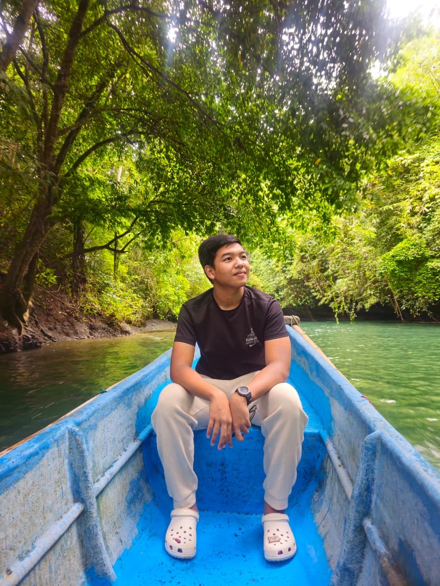

AI & Cybersecurity
Exploring explainable AI and the correlation of security evidence into contextual risk analysis.
👋 Hi I am,

AI, Robotics & Sustainable Technology.


Hi, I'm Muhammad Kika Febriyansyah, but you can call me Kika! I'm a high school student at MAN Insan Cendekia Serpong, Indonesia, passionate about Artificial Intelligence and its potential to address real-world environmental and social challenges. My interests span AI, robotics, IoT, applied mathematics, competitive programming, cybersecurity, and environmental engineering. I enjoy transforming ideas into practical innovations, from autonomous oil-spill cleanup robots and air pollution filtration systems to sustainable energy and waste management solutions.
Beyond research, I'm the Founder of TechnoTerra, a youth-driven STEM organization empowering young people to explore technology and create meaningful impact. I enjoy leading initiatives, mentoring peers, and fostering collaborative communities. My journey has also led me to national and international recognition across science, research, mathematics, robotics, AI, cybersecurity, and technology, alongside my role as an SDGs Youth Action Ambassador 2026.
Looking ahead, I aspire to pursue Artificial Intelligence, particularly at the intersection of robotics, intelligent systems, cybersecurity, and environmental technology. I believe innovation goes beyond creating something new. It's about understanding how things work, challenging what's possible, and developing technology that is useful, responsible, and meaningful.
Exploring explainable AI and the correlation of security evidence into contextual risk analysis.
Bringing sensors, embedded programming, and physical prototypes together.
Developing practical solutions using recycled materials and sustainable engineering.
Designing experiments, interpreting evidence, and documenting results and limitations.
Exploring accessible learning and affordable health-monitoring systems.
Communicating ideas through scientific writing, fiction, poetry, and visual design.


Visual identity & illustration

Editing & visual storytelling
Modelling & digital experiments

Notebooks & experimentation

Code editors & C++ development


Traffic analysis & web security

ESP32 · Arduino · Sensors · IoT

Experimental design · Analysis · Interpretation

Scientific writing · Presentations · Collaboration
INTELLIGENT · SECURE · SUSTAINABLE · INCLUSIVE
Engineering doesn't fit neatly into one discipline. A cleanup robot needs sensing, control, material science, and a real understanding of the environment. An AI system needs more than a model — it needs context, careful evaluation, and a reason to exist.
My work connects these disciplines. From ARUNA's recycled hair filters to CYVRA's evidence-based security analysis, I want to build systems that solve concrete problems and explain how they work.
Discover the projects ↗
02 / SELECTED WORK
An autonomous, IoT-enabled oil-spill remediation robot using recycled human hair as an oil-absorbent filter.
Read paper (PDF) ↗An explainable framework connecting heterogeneous security evidence into a contextual, evidence-based risk assessment.
An affordable IoT prototype exploring early detection of maternal anemia and nutritional risk through indirect biomarkers.
A multi-layer exhaust filtration prototype combining upcycled natural materials and mineral sorbents.
The Thermodynamic Bottleneck of Artificial Intelligence and the Engineering Roadmap for Sustainable Compute.
A modular ESP32-based smart-home ecosystem for lighting, temperature, ventilation, and safety.
An Android photography project exploring an AI-assisted camera experience.
A novel about the search for meaning, hardship, loss, resilience, and hope.
Published a research paper in Silampari Jurnal Pendidikan Ilmu Fisika, an accredited SINTA 4 journal.
Read paper (PDF) ↗03 / MILESTONES
04 / THE JOURNEY
A youth-driven initiative applying STEM to sustainable environmental solutions. Leading research collaboration, community programs, and the development of ideas into prototypes.
Guiding research initiatives, coordinating student collaboration, and supporting younger researchers at MAN Insan Cendekia Serpong.
Helping evaluate student organizations, represent student aspirations, and coordinate work-program planning.
Science, mathematics, and research in a national boarding school, alongside olympiad training and student leadership.
Mathematics competitions, robotics, and the first steps toward environmental innovation.

BEYOND THE CODE
I believe logic and creativity belong together. Alongside research, I write fiction and poetry and explore visual identity and digital design.
My novel, Tak Hingga Tanpa Makna, explores meaning, hardship, loss, and resilience. Whether it's a story or an engineering prototype, I care about making something people can connect with.
“One day you'll leave this world behind, so live a life that you will remember.”